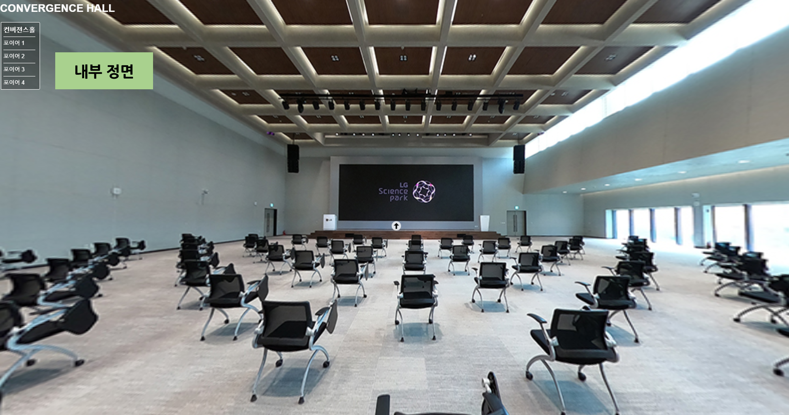
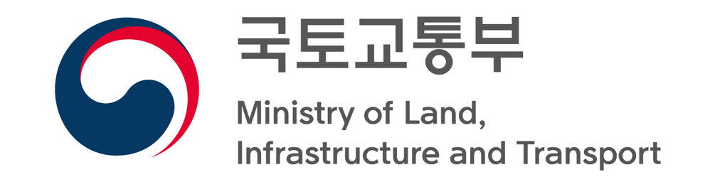

The 5th China-Korea Joint Seminar
on Sustainable Transportation Systems
Sep 14 - Sep 16, 2018, KAIST, Daejeon, South Korea
Home
Topics/Call for Papers
Program
Venue
Venue

Hosted by:
Co-organizers:

Sponsored by: